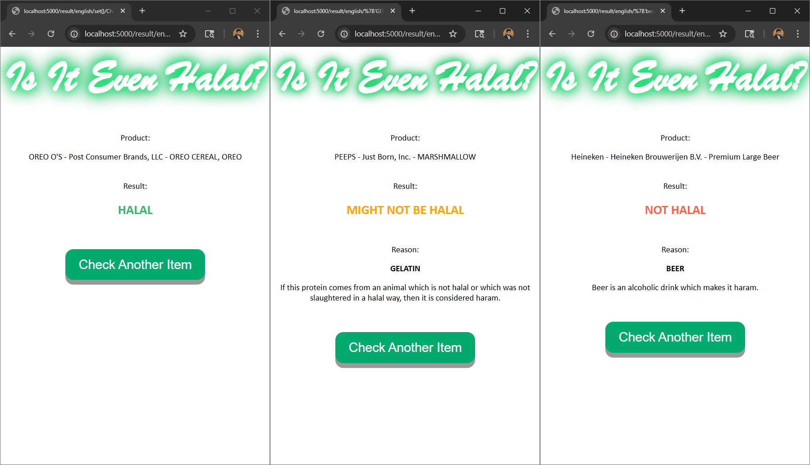

Personal Projects
Workload-Runner
I built a validation tool that can automatically create and execute random, reproducible, and concurrent tests once launched. The tool - Workload-Runner - is meant to be accompanied by multiple OS applications (i.e., workloads) which can be used to stress the different IPs of the system. The project was intended to provide a glimpse of the true power of an automated validation framework, and for that reason it employs very simple workloads for demonstration purposes. The project was written mostly in Python with a little bit of Shell. (To view the source code, click here.)
$ python3 ./main.py -wl workload_1 -wl workload_2 -iter 2 -seed 123
###################################################################
----------------- W o r k l o a d - R u n n e r -----------------
###################################################################
------------------------ by Rezwan Matin ------------------------
------------------------ Copyright 2025 -------------------------
###################################################################
TEST STARTED
Now running...
> Workload_1 <
> Workload_2 <
Test started with a user-defined seed
Test will run based on input iterations
###################################################################
Seed: 123
Iteration 1 of 2
1 wl_1: PASSED!
1 wl_2: PASSED!
###################################################################
Seed: 113
Iteration 2 of 2
2 wl_1: PASSED!
2 wl_2: PASSED!
###################################################################
TEST ENDED
Total runtime: 1.16 seconds
Total iterations: 2
Total tasks: 4
Passed: 4
Failed: 0
###################################################################
Is It Even Halal?
I built an application that can check whether a food item is considered halal - an Arabic word meaning permissible, which, in the context of food, describes items which are allowed to be consumed by Muslims according to Islamic teachings. This project uses the public API provided by the U.S. Department of Agriculture (USDA) in order to obtain the relevant information on food items requested by the user. If a food item is found in the database, and the result of the query marks the item as potentially haram (impermissible in Arabic), then the output will also list out the ingredients responsible for this labelling along with a brief explanation for each ingredient. The application created in this project has both a command-line version and a web version. The web version was created using Python's Flask framework. Currently, three different languages are supported in the application - English, Bengali, and Arabic. The texts are generated using the Google Translate API in the backend. (To view the source code, click here.)
The UI for the web application.
The three different output responses, in English.
The same responses as above, but in Bengali.
AI Chatbot
I built an AI chatbot that can be accessed from the terminal. It uses Google Gemini's API for accessing the Gemini models. (To view the source code, click here.)
$ python3 <project_root>/main.py
Welcome to the AI Chatbot (powered by Gemini)!
Start by entering a prompt.
(For quitting the application, type "quit".)
(For clearing the screen, type "clear".)
You: Explain how AI works in a few words
Chatbot:
AI learns patterns from data to make smart predictions or decisions.
You: quit
Thank you for using the AI Chatbot. Until next time!
Visa Appointment Checker
I built a script that can continuously check for available visa appointment slots without user intervention. It uses Python and Selenium to perform the automation. As of now, the project can only look for appointment slots for the Schengen visa in the Swiss Consulate of New York City, but support for other consulates is expected to be added in the future. Once started, the application will continue to run till either an appointment slot is found or the user manually interrupts its execution. If a empty slot is found, the user is alerted immediately with a pop-up alert box. (To view the source code, click here.)
Minigrep
I built a simpler version of the classic Linux command-line tool grep in Rust. (To view the source code, click here.)
$ cd <project_root>
$ cargo run -- to poem.txt
Finished `dev` profile [unoptimized + debuginfo] target(s) in 0.02s
Running `target\debug\minigrep.exe to poem.txt`
Are you nobody, too?
How dreary to be somebody!
Employee Database
I built an application for managing a database of all employees within a company. The user can add employees to a department, fetch the list of employees belonging to a particular department, and print out the list of all employees of the company according to their departments, in alphabetical order. The project was written entirely in Rust. (To view the source code, click here.)
$ cd <project_root>
$ cargo run
Finished `dev` profile [unoptimized + debuginfo] target(s) in 0.02s
Running `target\debug\employee_database.exe`
Welcome to the Company Employee Database!
Select an option:
(1) Add an employee
(2) Get employee names within a department
(3) Get all employee names by department
(4) Quit
1
Enter a new employee info in the format 'Add to ':
e.g., Add Sally to Engineering
Add Rezwan to Engineering
Select an option:
(1) Add an employee
(2) Get employee names within a department
(3) Get all employee names by department
(4) Quit
2
Enter department name:
Engineering
Members of the department are:
["Rezwan"]
Select an option:
(1) Add an employee
(2) Get employee names within a department
(3) Get all employee names by department
(4) Quit
3
Here are the employees by department:
Engineering:
["Rezwan"]
Select an option:
(1) Add an employee
(2) Get employee names within a department
(3) Get all employee names by department
(4) Quit
4
Strings to Pig Latin
I built an application for converting an input string consisting only of letters into Pig Latin. The project was written entirely in Rust. (To view the source code, click here.)
$ cd <project_root>
$ cargo run
Finished `dev` profile [unoptimized + debuginfo] target(s) in 0.02s
Running `target\debug\strings_to_pig_latin.exe`
Convert strings to Pig Latin!
Please enter your string (in lowercase):
first
Pig latin: irst-fay
Median and Mode
I built an application for calculating the median and the mode of a sequence of integers. The project was written entirely in Rust. (To view the source code, click here.)
$ cd <project_root>
$ cargo run
Finished `dev` profile [unoptimized + debuginfo] target(s) in 0.02s
Running `target\debug\median_and_mode.exe`
This program calculates the median and the mode of a list of integers!
Please input the list of integers, separated by space.
1 1 2 3 4 5
Your median: 2.5
Your mode(s): [1]
Fibonacci Number Finder
I built a number-finding application which can be used to find the n-th number in the Fibonacci sequence. The project was written entirely in Rust. (To view the source code, click here.)
$ cd <project_root>
$ cargo run
Finished `dev` profile [unoptimized + debuginfo] target(s) in 0.02s
Running `target\debug\fibonacci_number.exe`
Welcome to the nth Fibonacci number finder app!
Enter the position of the Fibonacci number in the sequence (index starts at 0):
17
The Fibonacci number in position 17 is: 2584
Twelve Days of Xmas
I built a simple but efficient lyrics-printing application which prints out the lyrics to the song Twelve Days of Christmas by John Denver and The Muppets. It takes advantage of the repetitive nature of the song by utilizing arrays and loops. The project was written entirely in Rust. (To view the source code, click here.)
Temperature Converter
I built a simple temperature converter application which prompts the user to enter the input temperature unit (Celsius or Fahrenheit) followed by the temperature to be converted. The project was written entirely in Rust. (To view the source code, click here.)
$ cd <project_root>
$ cargo run
Finished `dev` profile [unoptimized + debuginfo] target(s) in 0.02s
Running `target\debug\temp_converter.exe`
Welcome to the temperature converter app!
Select input temperature unit (C/F), or press 'q' to quit:
C
Enter the temperature:
25
77.0 F
Select input temperature unit (C/F), or press 'q' to quit:
q
School Projects
Simulating a bank system
April 2020 - May 2020This was a group project for "Forecasting and Simulation" course. We had to simulate the operation of a bank in Simio and find out hiring employees in which sector would benefit the bank the most.
A 3-D image of the bank system simulated using Simio.
Remote tracking of Houston toads
June 2019 - August 2019I was part of a team that mass-produced an automatic recording device (ARD) which was used to track Houston Toads. We used Raspberry Pi 3 for processing the audio signals that were recorded using the Blue Snowflake USB microphone. For managing the power consumption of the Raspberry Pi, we used Witty Pi 2. The ARD was powered using a 12 V battery connected to a 35 W PV solar cell. The device was scheduled to record audio for 10 minutes every hour for seven hours per day and send us notifications if Houston toads were detected via email and SMS.

The fleet of ARDs waiting to be deployed across several counties in Texas.
Using HPC and LiDAR for locating doorways
February 2019 - May 2019For my "(CAE) Simulations on HPC Systems" I had to do a solo project. My project involved using SLAMTEC's RPLiDAR A1M8 and C programming to detect the exits in a room. To speed up the process, I used OpenMP in my code.

Screenshot of a 2-D map created using SLAMTEC RPLiDAR A1M8.
A brief overview of perovskite solar cells
November 2018 - December 2018I had to prepare a report on a topic involving electronics for my "Advanced Electronic Circuit Design" course. I chose perovskite solar cells because I found it to be very interesting at the time, and also because I knew someone who was working with them.
Installing a supercharging station
October 2018 - December 2018For my "Probability, Random Variables, & Stochastic Process for Engineers" course I had to do a group project where my friends and I had to design a supercharging station for electric vehicles using only renewable energy. We had to provide a budget for the entire project and show how much power we would be producing from our renewable energy sources.
Temperature logger for biomedical applications
September 2015 - October 2015The idea of this project was to measure the temperature of hospital patients periodically and store the temperature readings in flash memory, so that they could be retrieved afterwards. If needed, the data stored could be used to plot graphs to show temperature trends for each individual patient. Microcontroller was employed in this project.
Remote home appliance control using DTMF
June 2014 - July 2014This was a group project for my "Control System I" course where my friends and I designed a remote controller for switching home appliances on and off over cellular connection. We used dual-tone multi-frequency signals for our project.